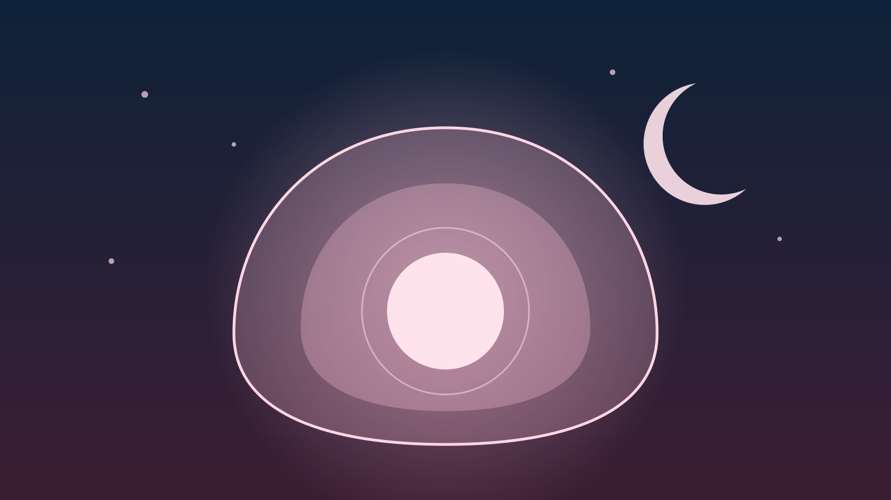

Depresión y ansiedad perinatal / posparto
No es "solo cansancio": embarazo y posparto pueden traer un cuadro que merece atención propia.
Qué es
El embarazo y el posparto pueden acompañarse de cambios anímicos y de ansiedad que van más allá de lo esperable. La depresión y la ansiedad perinatal pueden aparecer durante el embarazo o en el primer año después del parto, y no dependen de "cuánto se ama" al bebé ni reflejan una falla personal: son cuadros clínicos reconocidos, influidos por cambios hormonales, falta de sueño, historia previa de salud mental y el enorme reajuste que implica la maternidad o paternidad reciente.
Diferencia con el "baby blues"
No toda tristeza posparto es lo mismo.
- El "baby blues" es muy frecuente, aparece en los primeros días tras el parto, es leve y se resuelve solo en una o dos semanas.
- La depresión o ansiedad perinatal dura más, es más intensa, e interfiere de forma clara con el cuidado propio, del bebé o de la vida diaria.
- Si los síntomas persisten más de dos semanas, se intensifican, o aparecen ideas de daño, ya no se trata de un "bajón" pasajero.
Señales de alarma
Pueden aparecer durante el embarazo o después del parto.
- Tristeza, vacío o irritabilidad persistente, la mayor parte del día, casi todos los días.
- Ansiedad marcada, preocupación excesiva por la salud del bebé o pensamientos intrusivos difíciles de controlar.
- Dificultad para dormir incluso cuando el bebé duerme, o cansancio que no mejora con el descanso.
- Sentimientos de culpa, de no ser "suficiente" madre o padre, o de estar desconectado del bebé.
- Pérdida de interés en actividades que antes generaban placer, más allá del cansancio esperable.
- Ideas de hacerse daño o de dañar al bebé: siempre requieren atención urgente.
Cuándo consultar
Pedir ayuda temprano no es un fracaso: es parte del cuidado perinatal.
- Los síntomas duran más de dos semanas o interfieren con el cuidado propio o del bebé.
- Aparecen pensamientos intrusivos que generan mucho malestar o miedo a quedarse a solas con el bebé.
- Hay ideas de daño hacia una misma o hacia el bebé: es una urgencia, no hay que esperar.
- La pareja o el entorno nota un cambio marcado que la persona no logra ver con claridad.
Plan breve
Un resumen en pasos para releer rápido si esto te resuena.
- Si hay ideas de daño hacia vos o hacia el bebé, buscá ayuda urgente ahora, no esperes a la próxima consulta programada.
- Si los síntomas ya llevan más de dos semanas o interfieren con el día a día, pedí una consulta con un profesional de salud mental.
- Sumá apoyo concreto en el cuidado del bebé y el descanso, en la medida de lo posible: no es debilidad, es necesario.
- Hablalo con tu obstetra, pediatra o médico de cabecera: pueden ayudarte a coordinar la derivación.
Recursos relacionados
Otros materiales del sitio que pueden complementar este tema.
¿Querés orientación profesional?
Si esto te resuena, la Central de Turnos puede ayudarte a coordinar una consulta.